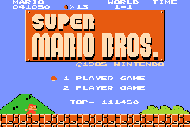

Classic NES Series: Super Mario Bros.

Complete on 2019-10-08
4 / 5
Screenshots


Notes
Solid platformer, beginning of a great legacy obviously. Decent port to the gba. Controls are a little stiff by modern standards. You have very little air control and can easily miss a jump and have several seconds to contemplate your mistakes before actually dying. A few elements of the game stand out as obnoxious, notably the hammer bros who are dicks. Bowser boss fights are also not great, either trivial (with a fire flower to shoot or a mushroom to damage boost past) or a dice roll (when you're small and you have to hope you can jump past). Obnoxious lives/game over system somewhat saved by a "cheat" to continue from the start of the current world on game over.